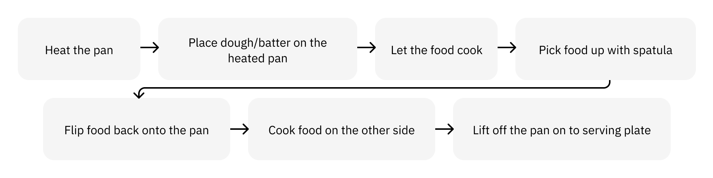
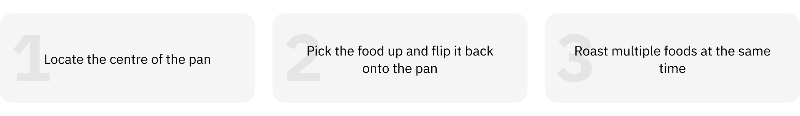
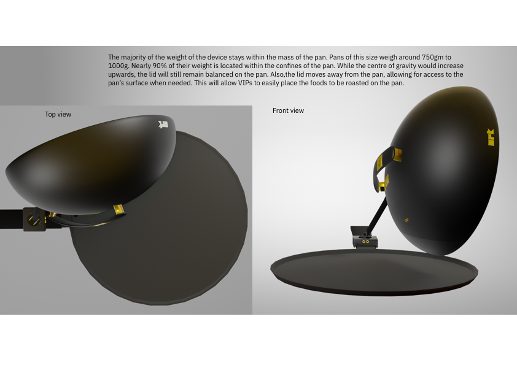

ARKLid - Lid for Assisted Roasting in Kitchens
Graduation Thesis Project
ARKLid is an assistive kitchen device designed to aid vision impaired persons in the task of roasting foods in home kitchens.
Preparing a meal involves complex stimuli-dependent steps and is a multi-sensorial activity that is necessary for survival. Inability to prepare meals independently is correlated with lowered nutrition levels among visually impaired persons (VIPs). Through multiple semistructured interviews, fly-on-the-wall observations, and video analysis, roasting food items was determined to be the cooking process that VIPs were most likely to attempt. An assistive device to aid VIPs in the process of roasting was conceptualised. The device is a electrical lid cook-top that assists the VIPs with on-pan spatial awareness and eases the process of roasting multiple foods by providing heat from the top. It works with a standard 28cm diameter pan present in a majority oof Indian households.
RoleUX Researcher and Designer
TeamIndividual
Research MethodsSemistructured Interviews, Video Analysis, Card Sorting, Process Mapping
BackgroundPreparing a meal is a basic activity needed for survival, involving multi-sensorial feedback, primarily relying on sight for many consequential decisions. Research has shown correlations between an individual’s ability to prepare a meal and quality of life [1], with lowered nutritions levels present among Visually Impaired Persons (VIPs) resulting from their lowered ability to shop for and prepare meals independently [2]. Assistive DevicesAssistive Devices (ADs) aid visually impaired persons by either augmenting senses or by enhancing sensory perception. There has been extensive work in aiding VIPs by enabling independence in various sectors such as navigation, personal care, financing, time keeping, and healthcare [3]. The body of research dealing with ADs for VIPs that aid in cooking related tasks is slim. Products present in the market predominantly take ergonomic considerations that help with mechanical tasks [5], and are designed primarily for a western audience and environment [1].
Recent advances in smart home care has led to widespread adoption of kitchen appliances with talk-back and automation. But these are rarely affordable by Indian households, and stand out in the tight and congested settings of Indian kitchens. Alternative solutions propose massive overhauls of societal infrastructure to enable independent movement and access, but is an expensive and resource intensive undertaking. Moreover, these solutions do not directly address the difficulties faced during the process of preparing meals, and instead seek to aid in the pre-meal preparations [6,7,8,9].
The goal of this project was to understand and define the problems plaguing the vision impaired as they prepare a meal, and design an assistive device that enables independence in the kitchen while taking into consideration various aspects of safety, cost, and conformity with everyday objects and tasks
• • •
ResearchPrimary research was conducted over two rounds of semi-structured interviews. The first round with 7 participants of differing levels of vision impairments was conducted to gauge the scope of the problem area. A second set of interviews honed in on understanding the specific problems mentioned, to scope the problem down further. InsightsFirst round of interviews helped understand the problem area and differentiate between problems easily overcome with strategies when compared to problems that prevented VIPs from performing the activity.
Preparatory activities such as kneading, peeling, cutting, etc. do not rely solely on visual input and can be done with relative ease
Cognitive load is high while preparing meals and this forces VIPs to cook one dish at a time
Tasks involving the flame/heat are activities are the most dangerous ones to be performed when lacking sight
Family members would prefer if they did not perform activities which involve heat application, as there is possibility of causing multiple handicap
“Not everything requires eyes while cooking. A lot of it is understood by the feeling” This helped scope the problem down to understanding problems faced when cooking on a flame. Before conducting a second round of interviews, all the cooking techniques involving application of heat used to prepare Indian dishes were listed along with the meals that can be prepared using the said techniques. Four techniques identified that are commonly used to prepare staples in homes were Boiling, Simmering, Roasting, and Frying (4).The second round of interviews were conducted with 5 participants of varying visual impairment levels and experience in kitchens to understand behaviours, problems and strategies used to prepare meals.
A SWOT analysis of the cooking techniques was performed. A necessity versus hesitancy graph was created to understand which of these cooking techniques could a potential intervention be designed for.
The SWOT analysis and necessity vs hesitancy graph bring clarity to a few areas:
Boiling and simmering are activities VIPs are comparitively more confortable attempting due to the lowered dependency of time based intervention when compared to roasting and frying.
The weaknesses VIPs face while Roasting and Frying also present a greater number of opportunities to design assistive devices to aid such scenarios, making these techniques more accessible.
The increased jeopardy when frying items coupled with inherent fear of the technique make frying a challenge to design and test for. Roasting, however, is a task VIPs are more likely to attempt, given the importance of the staples prepared using this method.
Hence, the problem statement was defined as: How can I make the process of roasting foods in Indian kitchens accessible to Visually Impaired Persons?
• • •
RoastingRoasting is a technique that involves cooking food with dry heat resulting in caramelisation on the surface of the food. When roasting in a pan, generally a small amount of cooking oil is used to prevent the food from sticking to the pan. Foods commonly prepared in this method are rotis, dosas, and processed meats.

Process of roasting a food While VIPs encounter multiple complications when attempting to follow this process, many problems can be mitigated through various strategies learnt over time. However, some problems cannot be resolved through the use of these techniques.

Problems to tackle Initial IdeationA few ideas to mitigate these problems were brainstormed.Intial ideations These solutions looked at the problems plaguing VIPs discretely by providing a reference to the centre of the pan, or creating physical partitions to roast multiple food items at once. But these weren’t a good solution to integrate into one holistic accessible roasting package. I went back to the drawing board to better understand the problems. Redefining the approachThe question, why do we have to do what we do while roasting was asked to understand if the problems we were focusing on were the right ones. Food needs to be placed on a pan, and for VIPs, having a trackable point is all the more important. But using the handle as a reference provides only an indirect reference to the pan, making this still a legitimate problem. Flipping the food back onto the pan is done to cook the food on both sides. But, this is extremely sight dependent, requiring high amount of hand-eye coordination, combined with a feel for the balance of the object being held. This problem only compounds when dealing with multiple items on the same pan. It became clear that flipping to roast the foods on both sides is done only because it is convenient for sighted individuals to do so. A change in this process would make roasting more accessible. The problem was redefined to understand how we could provide heat from both sides to eliminate the task of flipping entirely. Refined problems to tackle Ideations Pt.IISecond round of ideations Mechanical solutions for placing items in the centre of the pan were ideated in the second round. As for heating items on both sides, toasters, hotplate lid cooktops, and folding handles were sketched out.
• • •
Final ConceptThe ideas taken forward to design the final concept were based on the self defined constraints of maintaining user safety, ensuring ease of use, establishing familiarity to objects used in the kitchen space, and keeping a costs in check.The chosen ideas were the lid with the hotplate for the safenet it provides to users while maintaining familiarity to daily objects. Mechanical solutions for accessing the centre were ditched in favour of the ultrasonic sensors as it allowed for greater autonomy of the user, while being comparatively less cumbersome.
PrototypeThe proof of concept for the hotplate was made with thermoelectric generators acting as the heating element, a sliding potentiometer for controlling the heat, and a vibration DC motor to provide the feedback. For gauging the centre, a lego construction using ultrasonic sensors was prototyped.A physical mock-up of the device made as well and trialed with items kept on all the other gas stoves for a worst case scenario.There were a few details on the lid, such as the placement of the control panel, and the interactions a user would have with it that were yet to be finalised. A few sketches were made and paper prototypes tested in order to decide on the control panel for the lid.
• • •
The ARKLidARKLid is a lid for Assisted Roasting in Kitchen. It is designed to work with a standard 28cm diameter pan.

• • •
LimitationsMany facets of the design have been left open to interpretation. Formal and material aspects weren’t looked at in great detail. Efficacy of thermoelectric generators and the power source required to run it are still untested. The biggest caveat of all is this design came about during the beginning of the pandemic, when lockdowns were in place. This lead to the creation of a concept based purely on theoretical hypotheses. Further testing of mock-ups would help determine not only the potency of the design, but also contribute in understanding if the direction to develop a holistic assistive device over smaller, task-specific assistive aids was the right choice. What does the future hold?Limited research in the area of cooking for VIPs, especially in specialised contexts, opens up a multitude of opportunities for designers and researchers. With regards to ARKLid, more experimentation with formal and material aspects could lend to the creation of an elevated experience. And lastly, as is true with nearly every accessibility focused design, the use cases for assistive devices do not stop with persons with disabilities. The ARKLid has potential to be used by a myriad of users, ranging from the elderly to those with arm injuries.
• • •
This project was completed in partial fulfillment of credits for the Integrated Masters Program in Interaction Design at IDC School of Design, IIT Bombay. The duration of the project was from January 2020 to June 2020.
Links
References
Kostyra, Eliza, et al. "Food shopping, sensory determinants of food choice and meal preparation by impaired people. Obstacles and expectations in daily food experiences." Appetite 113 (2017): 14-22.
Ecosse L Lamoureux, Jennifer B Hassell, and Jill E Keeffe. 2004. The determinants of participation in activities of daily living in people with impaired vision. American journal of ophthalmology 137, 2 (2004).
Hersh, M. A. "The design and evaluation of assistive technology products and devices part 1, design, International Encyclopedia of Rehabilitation, 2010." (2010).
“The Must Know Indian Cooking Methods For Authentic Taste”. https://spiceitupp.com/indian-cooking-methods-you-need-to-know/
Kevin Chiam. [n.d.]. Folks Kitchenware for the Blind. https://kevinchiam.com/folks-kitchenware-for-the-blind
How to Make Your Kitchen Safer for Visually Impaired Person? medium.com/how-to-make-your-kitchen-safer-for-visually-impaire..."How to Make Your Kitchen Safer for Visually Impaired Person?”
Benjamas Kutintara,Pornpun Somboon,Virajada Buasri,Metinee Srettananurak,Piyanooch Jedeeyod, Kittikan Pornpratoom, and Veraya Iamcham. 2013. Design and evaluation of a kitchen for persons with visual impairments.
Sandra C Hartje. 2005. Universal design features and product characteristics for kitchens. Housing and Society 32, 2 (2005), 101-118.
Mary H Yearns, Patrick E Patterson, and Andrew Bice. 2005. Developing cabinet prototypes for a universal design kitchen. Housing and Society 32, 2 (2005), 81-100.